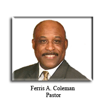
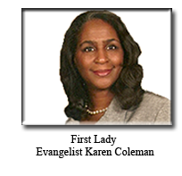

Our Vision: To make disciples by leading men and women to saving knowledge
or Our Lord and Saviour, Jesus Christ.
Our Strategy: To flow in the Spirit so that we begin to change the
world around us by allowing others to see Christ in us.
Who we are: New Birth Baptist Church is a beacon of Christian education
to the Community.
Our Motto: "Everybody is Somebody". We are committed to teaching the
Word of God to all ages and all cultures.
Our Worship: Our worship services are vibrant, yet balanced with a
mixture of the contemporary and traditional elements of worship. We want you
to be encouraged and built up in your faith as you experience God's
life-changing presence in corporate worship.